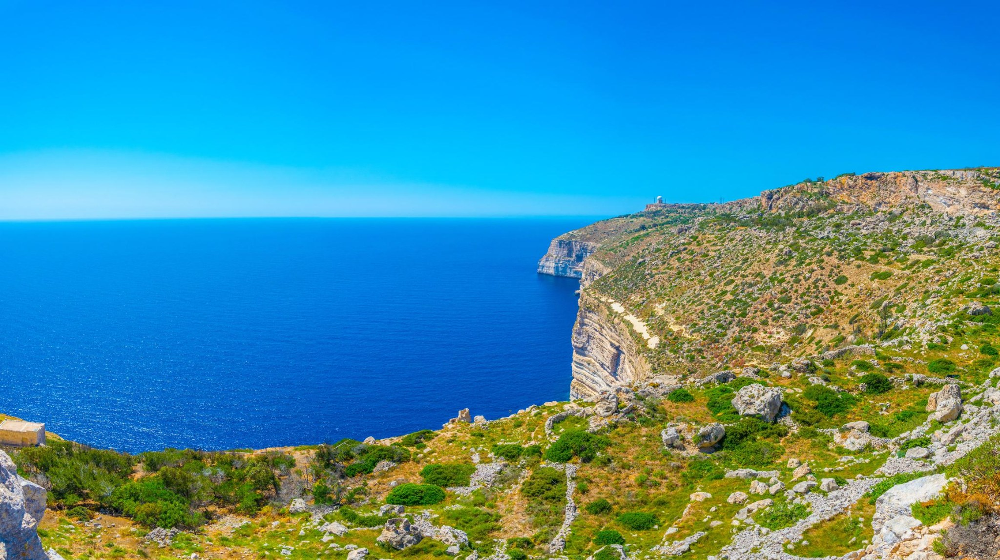
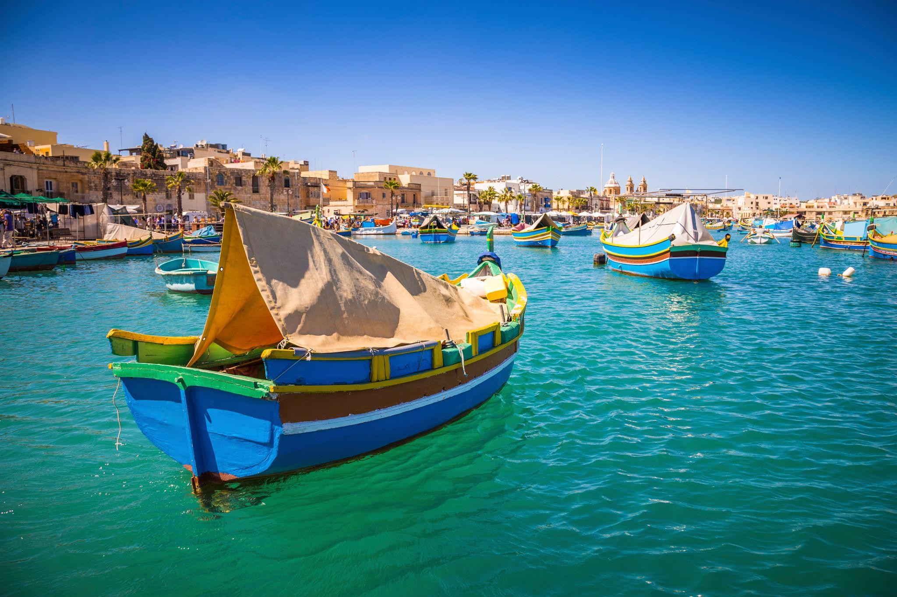

Upptäck Malta
Från historiska gränder och dramatiska klippor till små fiskebyar, badvikar och utflykter på Gozo. Här hittar du inspiration för att upptäcka mer av de maltesiska öarna – oavsett om du är här på semester eller bor här året runt.
Hitta ditt Malta
Malta är litet till ytan, men upplevelserna ligger tätt. Du kan börja dagen i en gammal stad, bada i klart vatten på eftermiddagen och avsluta med middag vid havet. Välj det som lockar mest och planera gärna lite extra restid – trafiken kan göra korta avstånd långsammare än man tror.
Platser att upptäcka
En historisk stad, en dag vid havet eller en utflykt till grannön? Välj ett utflyktsmål och läs mer i guiden.

Valletta
Utforska huvudstadens gränder, palats och utsikt över Grand Harbour.
Läs mer ↗
Mdina & Rabat
Promenera genom den tysta stadens kalkstensgränder.
Läs mer ↗
Dingli Cliffs
Dramatiska klippor och vidsträckt hav på västkusten.
Läs mer ↗
Golden Bay
Gyllene sand, havsbad och en klassisk dag vid kusten.
Läs mer ↗
Marsaxlokk
Färgglada fiskebåtar och restauranger längs hamnen.
Läs mer ↗
Gozo
Upptäck Victorias citadell, byar och kustlandskap.
Läs mer ↗Fotokällor: egna webbplatsbilder för Dingli Cliffs och Marsaxlokk; övriga fotografier via Wikimedia Commons. Valletta: TerryDOtt; Golden Bay: Searching For Bliss (CC BY 4.0). Se respektive bildsida för licensvillkor.
Historiska städer och sevärdheter
Valletta
Maltas huvudstad bjuder på smala gator, barockarkitektur, museer och storslagna vyer över Grand Harbour. Promenera genom Upper Barrakka Gardens och upptäck stadens kyrkor, palats och små kaféer. Valletta är dessutom lätt att utforska till fots.
Mdina och Rabat
Den muromgärdade staden Mdina kallas ofta the Silent City. Här väntar lugna gränder, historiska byggnader och utsikt över stora delar av ön. Strax utanför murarna ligger Rabat, med lokala kaféer och historiska katakomber.
De tre städerna
Vittoriosa (Birgu), Senglea (L-Isla) och Cospicua (Bormla) ligger på andra sidan Grand Harbour från Valletta. Här kan du vandra längs vattnet, upptäcka smala gränder och se Maltas maritima historia på nära håll.
Förhistoriska tempel
Malta är känt för sina megalitiska tempel, bland annat Ħaġar Qim och Mnajdra. Kontrollera aktuella öppettider och biljettinformation hos Heritage Malta innan besöket.
Natur, klippor och utsikter
Dingli Cliffs
Längs Maltas västkust reser sig klipporna högt över Medelhavet. Här är det fint att promenera, njuta av utsikten och se solen gå ner. Håll avstånd till branta kanter och välj skor som fungerar på ojämnt underlag.
Blue Grotto
På sydkusten finns den välkända Blue Grotto, ett område med havsgrottor och klart vatten. Utsikten från land är en upplevelse i sig. Båtturer kan erbjudas när väder och sjöförhållanden tillåter.
Buskett och västra Malta
Vill du byta havsutsikten mot grönska kan du utforska Buskett, ett av Maltas mest skogbevuxna områden. Särskilt under de svalare månaderna är naturpromenader ett trevligt alternativ till strandlivet.
Stränder och badvikar
Golden Bay och Għajn Tuffieħa
Två populära sandstränder på nordvästra Malta. Golden Bay är lätt att känna igen på sin breda sandstrand, medan Għajn Tuffieħa nås via en längre trappa. Ta med vatten och tänk på att vägen tillbaka går uppför.
Mellieħa Bay
En av Maltas större sandstränder med långgrunt vatten på många ställen. Den kan vara ett bra alternativ för familjer, men under högsäsong är det ofta mycket folk.
St. Peter’s Pool
En naturlig badplats vid klipporna nära Marsaxlokk. Här finns inte en traditionell sandstrand, och tillgängligheten kan vara begränsad. Kontrollera vågor och badförhållanden noga innan du går i vattnet.
Bad säkert: Vind och vågor kan ändra förhållandena snabbt. Följ lokala varningar, undvik utsatta klippkanter och respektera eventuella badflaggor.
Fiskebyar, hamnar och vardagsliv
Marsaxlokk
Den färgstarka fiskebyn i sydöstra Malta är känd för sina traditionella luzzu-båtar, restauranger vid vattnet och sin marknad. En promenad längs hamnen passar lika bra för en lugn förmiddag som för en längre utflykt.
De mindre orterna
Malta har många byar med torg, kyrkor, småbutiker och lokala kaféer. Att besöka en ort utanför de största turiststråken är ett fint sätt att upptäcka vardagslivet. Håll utkik efter lokala festas, de traditionella byfesterna som ofta fyller gatorna med dekorationer och firande.
Gozo och Comino
Gozo
Gozo har ett lugnare tempo och en egen karaktär. Besök citadellet i Victoria, promenera längs kustlandskapet eller upptäck små byar och badplatser. Det går färjor från Malta, men kontrollera aktuell avgångsplats och tidtabell innan du reser.
Comino och Blue Lagoon
Comino är särskilt känt för Blue Lagoon och det turkosa vattnet. Under populära perioder kan området vara mycket välbesökt. Kontrollera eventuella boknings- eller tillträdesregler, båtturer och väderförhållanden före avfärd.
Planera en lyckad utflykt
Resor: Bussar når många orter och sevärdheter, men vissa naturplatser kräver en promenad från närmaste hållplats. Räkna med trafik och kontrollera sista hemresan i förväg.
Väder: Sommarvärmen kan bli intensiv, särskilt mitt på dagen. Ta med vatten, solskydd och bekväma skor. Under vinterhalvåret kan vinden vara kraftig vid kusten.
Öppettider: Museer, båtturer och aktiviteter kan ha säsongsberoende tider. Kontrollera aktuella uppgifter hos arrangören före besöket.
Badkläder på offentliga platser
På Malta bör du byta om eller ta på dig vanliga kläder när du lämnar stranden eller badområdet. I bland annat Sliema, St Julian’s, Swieqi och Gżira har frågan uppmärksammats särskilt, och böter för olämplig klädsel har även utfärdats på flera andra orter. Att gå genom stadsgator, in i butiker eller på restauranger i enbart bikini, badbyxor eller bar överkropp kan bedömas som olämpligt.
Maltas lag förbjuder nakenhet och oanständig klädsel på offentliga platser, men definierar inte exakt vilka badplagg som alltid är förbjudna. Följ skyltningen på plats och ta gärna med en tröja, shorts eller något annat att dra över badkläderna. Tidigare skyltar om en fast bot på 75 euro har ändrats; vi anger därför inget generellt bötesbelopp.
Ta hand om platserna: Lämna inget skräp, respektera naturen och följ lokala skyltar och avspärrningar.
Har du frågor om Malta?
Letar du efter en särskild typ av utflykt eller vill du ha tips om var du ska börja? Hör gärna av dig.